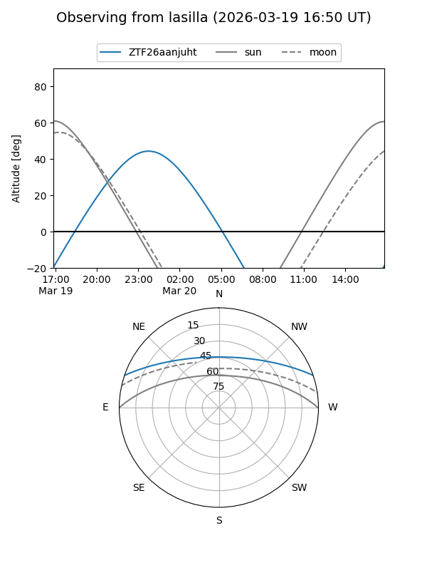
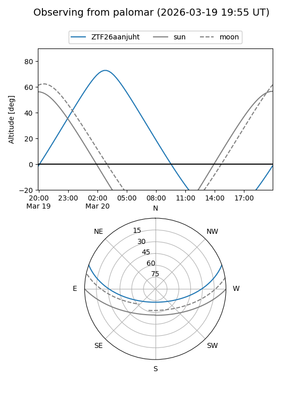

ZTF26aanjuht
Target ZTF26aanjuht at 2026-03-20 04:28
Aliases and brokers:
FINK: link
Lasair: link
ALeRCE: link
alt names
ZTF26aanjuht (ztf,fink_ztf)
Coordinates:
equatorial (ra, dec) = 102.5496,+16.38243
equatorial (HMS+DMS) = 06:50:11.90,+16:22:56.77
galactic (l, b) = (198.1373,+7.12249)
Flags:
Photometry:
last ztfg=19.98
1 ztfg detections
Lightcurve
Visibility


Additional plots